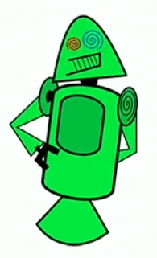
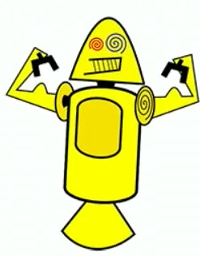
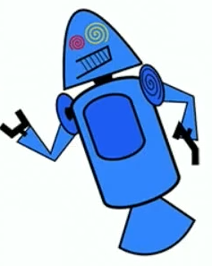
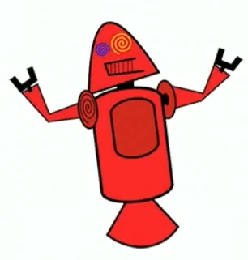
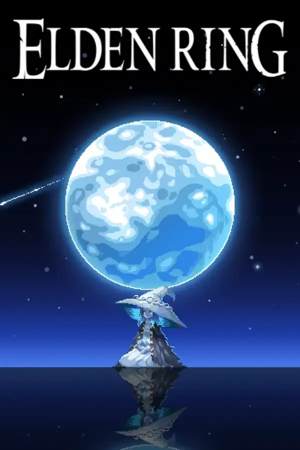

História do mascote do android
Provavelmente voce sabe que o sistema operacional Android HAHAHAHAHAH, mantido pelo Google e um dos mais utilizados para dispositivos moveis em todo o mundo. Mas tavez voce nao saiba que o seu simpatico mascote tem um nome e uma historia muito curiosa? Pois acompanhe esse artigo para aprender muita coisa sobre esse robozinho.
A primeira versão
A primeira tentativa de criar um mascote surgiu em 2007 e veio de um desenvolvedor chamado Inkscape apenas para a a sua equipe, nao existia nenhuma solicitacao da empresa para a criacao de um mascote. Dan Morrill (software livre para vetorizacao de imagens) e criou sua propria versao de robo. O objetivo era apenas personificar o sistema. Ele conta que abriu o




Essa primelra versao bizarra ate foi batizada em homenagem ao seu criador seriam os Dandroids
Surge um novo mascote
A ideia de ter um mascote foi amadurecendo e a missao foi passada para uma profissional da area. A ilustradora Russa Irina Blok também funcionária do Google, ficou com a missão de representar o pequeno robô de uma maneira mais agradável

A ideia principal da Irina era representar tudo graficamente com poucos traços e de forma mais chapada. O desenho também deveria gerar identificação rápida com quem o olha. Surgiu então o Bugdroid, o novo mascote do Android.

A principal inspiração para os traços do novo Bugdroid veio daqueles bonequinhos que ilustram portas de banheiro para indicar o gênero de cada porta. Conta a lenda que a artista estava criando em sua mesa no escritório do Google e olhou para o lado dos banheiros e a identificação foi imediata: simples, limpo, objetivo.